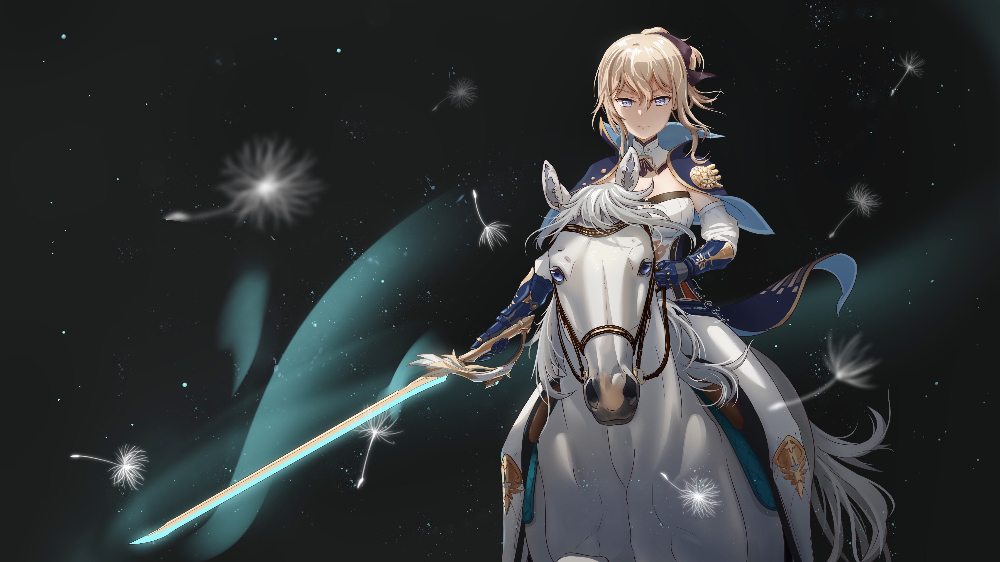
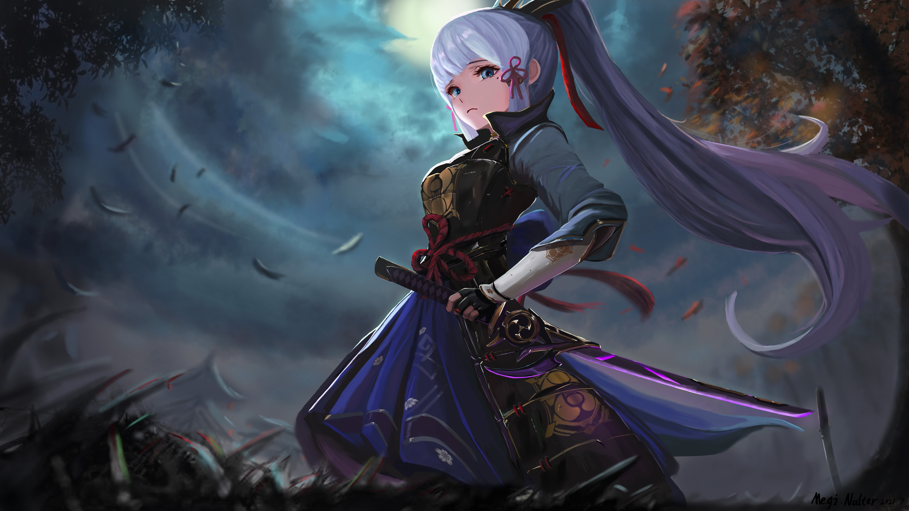
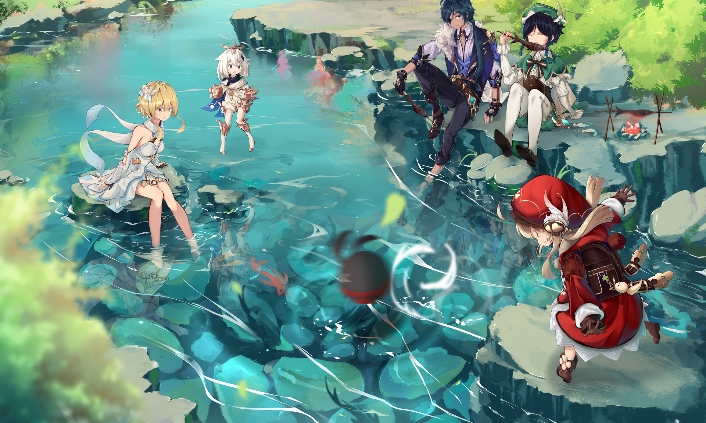
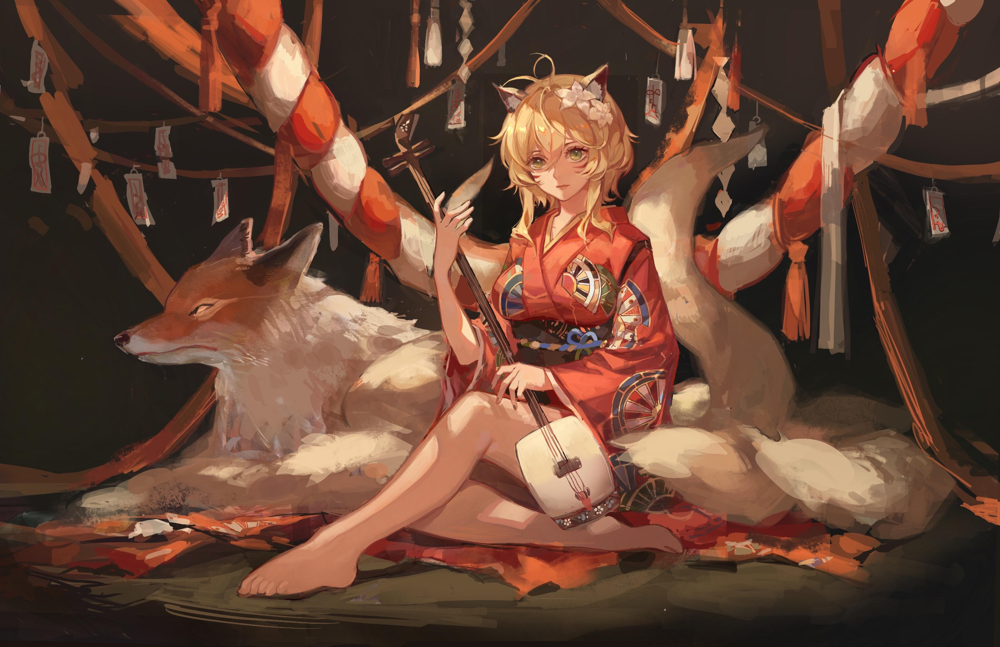

-

Designer
Tôi là một người luôn theo đuổi sự hoàn hảo trong từng chi tiết nhỏ. Dù là thiết kế, sáng tạo nội dung hay khám phá công nghệ mới, tôi luôn đặt cái tâm và sự chỉn chu vào mỗi việc làm. Với phong cách nhẹ nhàng nhưng quyết đoán, tôi không chỉ tạo ra sản phẩm chất lượng mà còn truyền cảm hứng tích cực đến mọi người xung quanh.
-

Developer
Tôi là một developer giàu đam mê với công nghệ và sự hoàn thiện trong từng dòng code. Không ngại thử thách, tôi luôn tìm kiếm giải pháp tối ưu và bền vững cho mọi dự án. Tinh tế trong thiết kế, logic trong tư duy, và tận tâm trong từng sản phẩm — đó là những điều tạo nên phong cách lập trình của Ganyu. Với tư duy sáng tạo và năng lượng tích cực, tôi không ngừng học hỏi để phát triển bản thân và đồng hành cùng công nghệ tương lai.
-

Marketer
Là một Marketer đầy sáng tạo, tôi luôn biết cách kể câu chuyện thương hiệu theo cách khiến người khác không thể rời mắt. Từ chiến lược nội dung đến chiến dịch truyền thông số, tôi luôn đặt sự thấu hiểu khách hàng làm trung tâm và không ngừng đổi mới để tạo nên những kết quả thực sự khác biệt. Với tư duy sắc bén và đam mê lan toả giá trị, tôi không chỉ tiếp thị — mà còn kết nối cảm xúc.
-

Gamer
Tôi không chỉ là một gamer — mà là một chiến binh thực thụ trong thế giới ảo. Dù là leo rank, khám phá thế giới mở hay phối hợp đồng đội trong những pha combat nghẹt thở, tôi luôn thể hiện sự nhanh nhạy, chiến thuật sắc bén và tinh thần không bao giờ bỏ cuộc. Với tay cầm trong tay và đam mê trong tim, tôi biến mọi thử thách thành cuộc chơi và mọi cuộc chơi thành cơ hội toả sáng.
-

Editor
Tôi là người đứng sau hậu trường, tinh chỉnh từng dòng chữ, từng khung hình để tạo nên một tác phẩm hoàn hảo. Với con mắt sắc bén và tinh thần cầu toàn, tôi không chỉ chỉnh sửa — mà còn thổi hồn vào nội dung, giúp mọi thông điệp trở nên rõ ràng, thuyết phục và đầy cảm xúc. Làm việc lặng lẽ nhưng tạo dấu ấn sâu sắc, tôi là chiếc "bút bi đỏ" đáng tin cậy của mọi dự án truyền thông và sáng tạo.